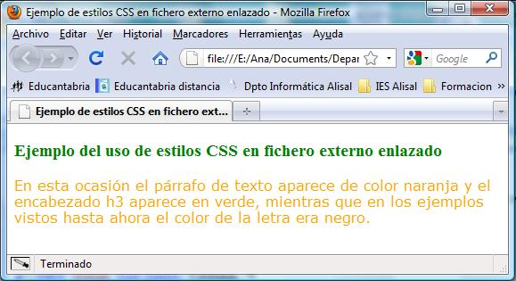

3.2.3.- Definir estilos en un archivo externo enlazado.
Para realizar una página web usando un archivo CSS externo, se deben seguir los tres pasos siguientes:
- Se crea un archivo de texto plano con las definiciones de los formatos.
- Dicho archivo de texto se guarda con extensión .css
Un ejemplo podría ser el archivo formatos.css siguiente:
h3 { color: green;}
p { color: orange; font-family: Verdana; }A continuación, debemos enlazar el archivo CSS externo mediante la etiqueta <link> en la cabecera de la página web. El elemento <link> puede tener definidos cuatro atributos cuando se enlaza un archivo CSS:
- rel: indica el tipo de relación que tiene el archivo enlazado y la página HTML. Para los archivos CSS, siempre se utiliza el valor "stylesheet"
- type: indica el tipo de recurso enlazado. Para los archivos CSS su valor siempre es "text/css"
- href: indica la URL del archivo CSS que contiene los estilos. Puede ser relativa o absoluta y puede referenciar a un recurso interno o externo al sitio web.
- media: indica el medio en el que se van a aplicar los estilos del archivo CSS.
Un ejemplo de cómo enlazar el fichero formatos.css sería:
<!DOCTYPE html>
<html>
<head>
<title>Ejemplo de estilos CSS en fichero externo enlazado</title>
<link rel="stylesheet" href="formatos.css" >
</head>
<body>
<h3>Ejemplo del uso de estilos CSS en fichero externo enlazado</h3>
<p>En esta ocasión el párrafo de texto aparece de color naranja y
el encabezado h3 aparece en verde, mientras que en los ejemplos vistos hasta ahora el color de la letra era negro.</p>
</body>
</html> Al publicarlo, en un navegador veríamos:
